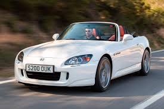
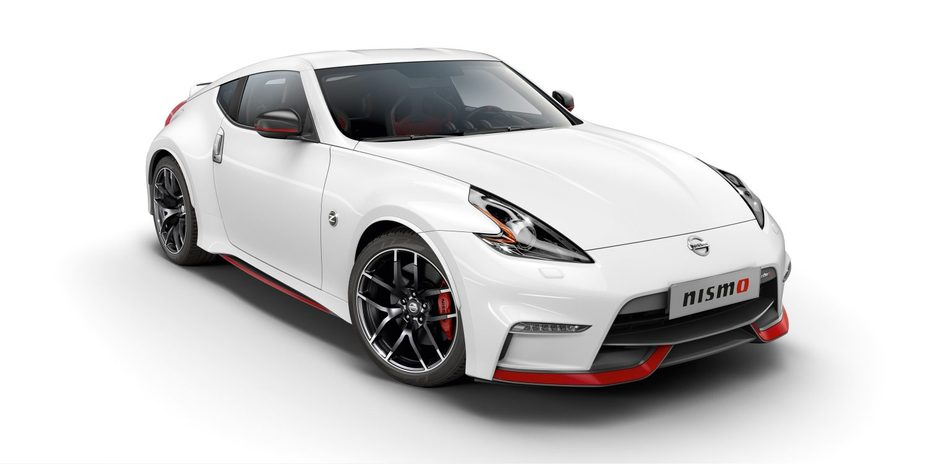
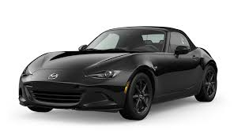
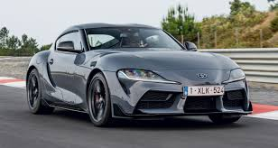

| Inicio | Honda s2000 | Nissan 370z | Manza MX-5 | Toyota GR |
|---|
Los coches japoneses son conocidos por su confiabilidad, eficiencia y calidad. Algunas de las marcas más populares incluyen Toyota, Honda, Nissan, Mazda, Mitsubishi y Subaru. Estas marcas ofrecen una amplia variedad de modelos, desde vehículos compactos y económicos hasta SUV y camiones.
| Honda s2000 | Nissan 307z | Manza MX-5 | Toyota GR |
|  |  |  | ; |
| El S2000 estuvo disponible desde 1999 y hasta 2009, sin embargo, en 2004 recibió un facelift con el cual cambiaron algunos rasgos de su imagen, pero principalmente se trabajó en una nueva puesta a punto para la suspensión buscando elevar aún más la calidad y sensaciones al volante. Para Estados Unidos, se le dio un motor nuevo que bajaba el limitador, pero ofrecía más torque en la zona media y baja; esto para satisfacer las demandas de los clientes de tal mercado, pues sentían que el auto era lento. En Japón ese motor nuevo, se introdujo hasta 2006. | Este coche tiene muchas cosas buenas, pero quizá la mejor de todas ellas sea el precio. Esta versión descapotable y con cambio automático no es el mejor ejemplo, ya que su precio oficial está algo por encima de los 45.000 euros. Estamos hablando de unos 100 euros por CV, lo que significa que la relación entre precio y potencia es difícilmente superable. |
Sus principales especificaciones incluyen un motor SKYACTIV®-G de 2.0 litros con 181 hp y 151 lb-pie de torque, tracción trasera, una transmisión manual de 6 velocidades o una transmisión automática de 6 velocidades con modo manual, y un peso ligero que contribuye a su equilibrio de peso 50/50. | La gama de vehículos deportivos GR de Toyota (Gazoo Racing) ofrece una experiencia de conducción emocionante y de alto rendimiento, enfocada en la diversión y la precisión. Estos vehículos, diseñados para ser conducidos y disfrutados al máximo, incluyen modelos como el GR Corolla, GR Yaris, GR86 y GR Supra, cada uno con características y especificaciones únicas para el entusiasta de la conducción. |